1. 定義與核心概念
| 項目 | 重點 |
|---|---|
| 本質 | MSU crystal deposition disease（結晶性關節炎） |
| 致病結晶 | Monosodium urate（MSU）；針狀、負雙折射（見 §4） |
| 必要背景 | 幾乎都有長期 hyperuricemia，但 高尿酸 ≠ 痛風 |
| 急性表現 | 極痛的單／少關節炎（典型第一 MTP = podagra） |
| 慢性表現 | 反覆發作 → tophaceous gout、骨侵蝕、關節破壞 |
1.1 高尿酸怎麼來（機轉兩大類）
| 類型 | 機轉 | 常見情境 |
|---|---|---|
| Underexcretion（多數，~90%） | 腎／腸道排尿酸不足 | 原發性、CKD、利尿劑、低劑量 aspirin、酒精 |
| Overproduction | 嘌呤代謝↑、細胞轉換↑ | 腫瘤溶解、骨髓增殖（如 PV）、HGPRT 缺乏、高果糖／高嘌呤飲食 |
2. 臨床分期與表現
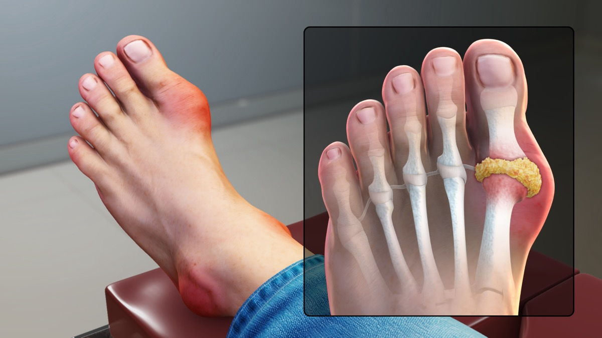
痛風臨床總覽圖（podagra、tophi 等）。Source: Wikimedia Commons / BruceBlaus (CC BY).2.1 自然病史（四階段）
- Asymptomatic hyperuricemia — 僅血尿酸高，無症狀
- Acute gouty arthritis — 急性發作（數小時達峰，極痛）
- Intercritical（interval）gout — 發作間期看似正常，但關節內常仍有結晶
- Chronic tophaceous gout — 結節、侵蝕、慢性關節病變
2.2 急性發作特徵
- 突發、極痛（常夜間／清晨）；數小時內達巔峰
- 單關節最常見；第一 MTP（podagra） 最經典
- 其他高頻部位：中足、踝、膝；上肢（腕、指）多見於久病／老年
- 紅、腫、熱、極度觸痛；可有低度發燒 → 務必與蜂窩性組織炎／化膿性關節炎鑑別
- 未治療通常 數天～2 週 自行緩解（self-limited）
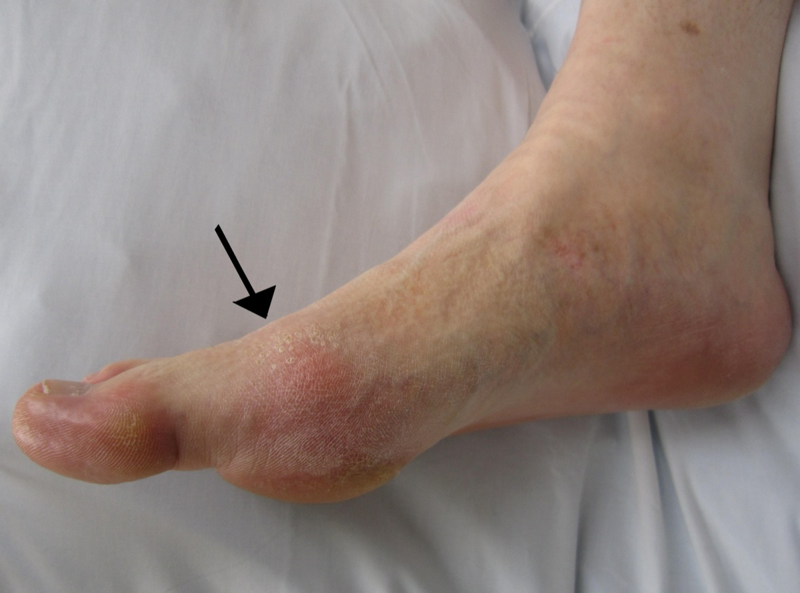
急性痛風（podagra）：大趾 MTP 關節紅腫。Source: Wikimedia Commons / Doc James (CC BY-SA).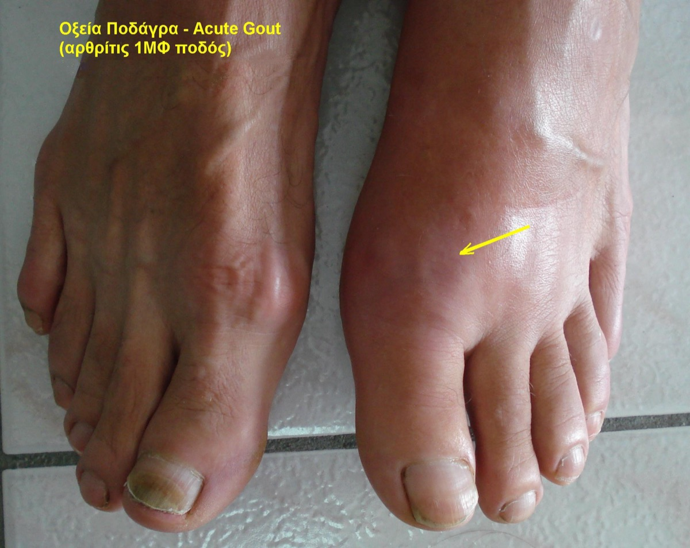
急性痛風亦可見於上肢小關節（久病／老年較常見）。Source: Wikimedia Commons.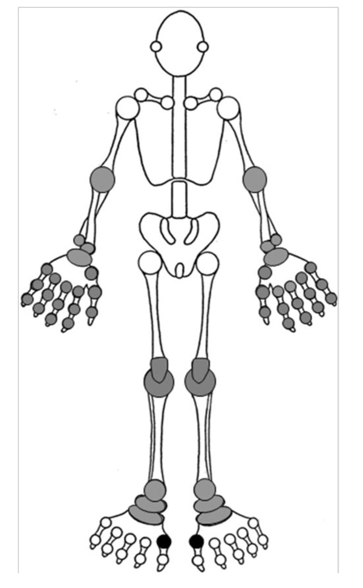
痛風好發關節分布（第一 MTP 最經典）。Source: Wikimedia Commons / BruceBlaus (CC BY).2.3 Tophi（痛風石）
- 慢性 MSU 結晶聚集於軟組織／骨／關節
- 常見：耳廓、鷹嘴囊、指／趾伸側、跟腱、第一 MTP
- 可潰破排出白堊樣物質；影像上對應侵蝕與軟組織腫塊
- 代表 結晶負荷高 → 幾乎一定需要 積極 ULT
慢性 tophaceous gout：第一 MTP 痛風石：原始來源（畫面含手環文字，公開副本只保留來源連結。） 慢性 tophaceous gout：左第一 MTP 明顯 tophus。Source: Wikimedia Commons.
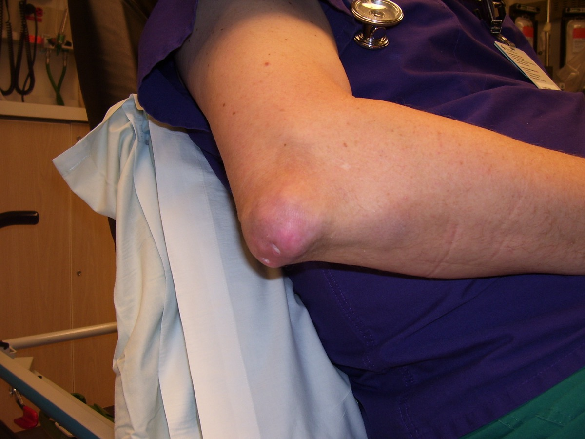
肘部（鷹嘴囊）tophi——慢性痛風經典部位之一。Source: Wikimedia Commons.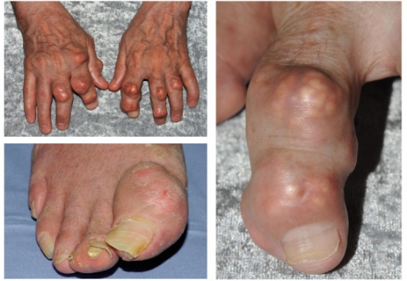
雙手多發 tophi 與關節變形。Source: Wikimedia Commons.3. 致病機轉 Pathogenesis
| 步驟 | 內容 |
|---|---|
| 1. 過飽和 | 長期 hyperuricemia → 組織液過飽和 → MSU 結晶沉積 |
| 2. 結晶釋出／暴露 | 溫度↓、pH 變化、創傷、脫水、尿酸快速升降 → 促發急性反應 |
| 3. 先天免疫 | 巨噬／單核球吞噬 MSU → NLRP3 inflammasome 活化 |
| 4. 效應 | Caspase-1 → pro–IL-1β → IL-1β；趨化中性球；補體、NETs 參與 |
| 5. 自限 | 吞噬後結晶「包被」、抗炎介質↑、細胞凋亡 → 發作可自行緩解 |
誘發因子（急性發作）
- 酒精（尤其啤酒）、高嘌呤大餐、果糖飲料
- 利尿劑、住院／手術、創傷、脫水
- 開始或調整 ULT 初期（尿酸波動可「動到」結晶）→ 故啟動 ULT 常需 預防性 colchicine／低劑量抗炎
4. 診斷 Diagnosis
4.1 金標準
關節液（或 tophus 吸出物）偏振光顯微鏡：針狀 MSU 結晶，強負雙折射（negatively birefringent）
（相對：CPPD 為菱形／棒狀、弱正雙折射 → 假性痛風）
| 結晶 | 形狀 | 雙折射 | 疾病 |
|---|---|---|---|
| MSU | 針狀 needle | 負（黃／藍依方位） | 痛風 |
| CPPD | 菱形 rhomboid | 弱正 | 假性痛風／CPPD 病 |
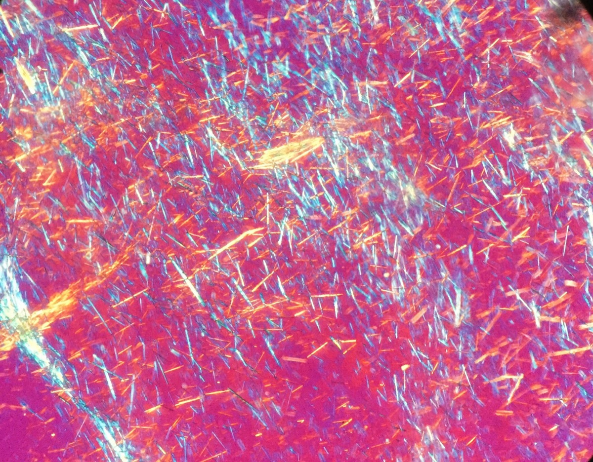
偏振光顯微鏡：針狀 monosodium urate（MSU）結晶——診斷金標準。Source: Wikimedia Commons (CC BY).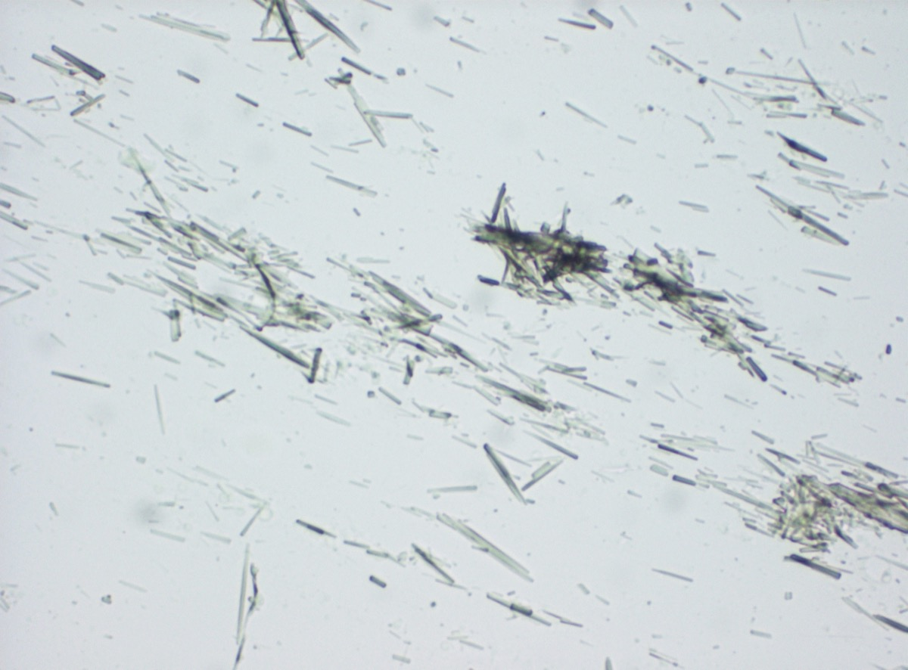
Tophus 壓片光學顯微鏡可見尿酸結晶。Source: Wikimedia Commons / Mikael Häggström (CC0).4.2 影像 Imaging
| 模态 | 特徵 | 臨床用途 |
|---|---|---|
| Ultrasound | Double contour sign（軟骨表面高回聲線）；tophus 低回聲／異質腫塊；power Doppler 活動性炎症 | 床邊、無輻射；支持結晶沉積 |
| Dual-energy CT（DECT） | 依原子序區分 尿酸結晶 vs 鈣 | 非侵入性確認 MSU 沉積；tophi 負荷評估 |
| X-ray | 晚期：overhanging edge erosions、軟組織腫塊（tophus）、關節旁骨質破壞；早期常正常 | 分期／鑑別；不敏感於早期 |
| MRI | 非特異性滑膜炎、骨侵蝕、tophus | 較少作第一線痛風診斷 |
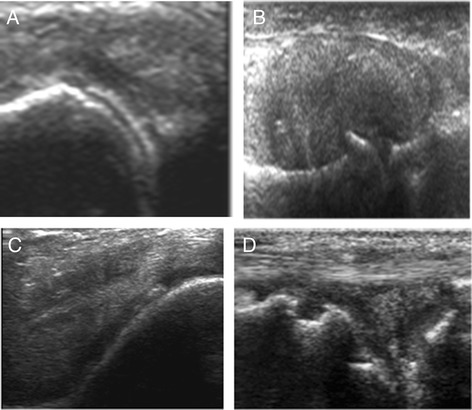
超音波教學圖：軟骨表面 double contour 等痛風相關徵象。Source: Wikimedia Commons / Mikael Häggström (CC0).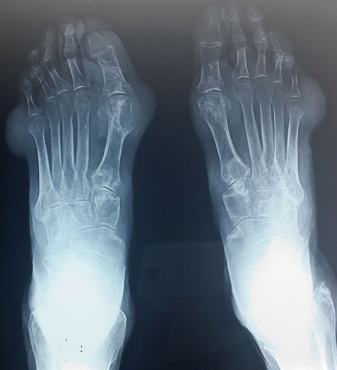
足部 X 線：痛風性骨侵蝕／關節旁破壞（晚期較明顯）。Source: Wikimedia Commons / Mikael Häggström (CC0).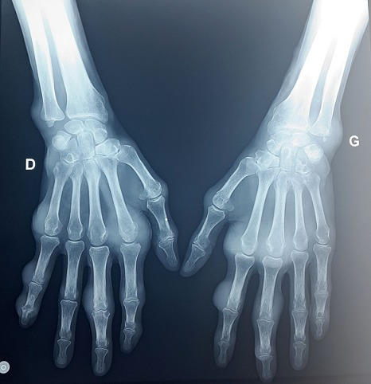
手部 X 線：慢性痛風性侵蝕與關節破壞。Source: Wikimedia Commons / Mikael Häggström (CC0).4.3 實驗室 Lab
| 項目 | 重點 |
|---|---|
| Serum uric acid（SUA） | 發作當下可正常甚至偏低（急性期尿酸可下降）→ 不能靠單次正常排除痛風；發作間期再測更有意義 |
| 關節液 | 白細胞常 數萬（中性球為主），外觀可似感染 → 一定要送培養 |
| CBC／CRP／ESR | 急性期升高；非特異性 |
| 腎功能、肝功能 | 用藥前必查（NSAID、colchicine、ULT 劑量） |
| 24h 尿酸排泄（選做） | 區分 overproducer vs underexcretor；決定 uricosuric 是否合適 |
4.4 分類標準（臨床／研究用）
ACR／EULAR 2015 gout classification criteria（分類 ≠ 嚴格臨床診斷 checklist，但考試／研究常用）：
| 面向 | 加分方向（概念） |
|---|---|
| 臨床 | 發作型態（突發、極痛、紅腫、≤1 天達峰、自行緩解）、第一 MTP、tophus |
| 實驗室 | 關節液 MSU+（可直接歸入；權重最高）、SUA 水平 |
| 影像 | 超音波 double contour、DECT 尿酸沉積、X 線典型侵蝕 |
5. 鑑別 Diagnosis 鑑別
| 疾病 | 如何分開 |
|---|---|
| 感染性關節炎 | 培養；風險（注射藥、免疫抑制、人工關節）；可併存！ |
| CPPD／假性痛風 | 結晶形態與雙折射；好發膝／腕；常伴軟骨鈣化 |
| 蜂窩性組織炎 | 以皮膚／軟組織為主；關節活動相對保留（但可難分） |
| 外傷／骨折 | 病史、影像 |
| 血清陰性脊椎關節炎、RA | 病程、血清學、影像分布不同；慢性痛風可 mimic |
| 其他結晶 | 極少見（oxalate 等） |
6. 治療 Treatment
治療永遠分兩條軌道：
flowchart LR
A[痛風治療] --> B[急性發作<br/>消炎止痛]
A --> C[長期管理<br/>降尿酸 ULT + 生活型態]
B --> D[NSAID / Colchicine / 類固醇<br/>± IL-1 抑制劑]
C --> E[XOI 一線<br/>Allopurinol / Febuxostat]
C --> F[目標: SUA < 6<br/>有 tophi 常 < 5]
6.1 急性發作 Acute flare
| 藥物 | 要點 | 注意 |
|---|---|---|
| NSAID | 足量、短程（如 naproxen、indomethacin 等） | 避開：CKD、心衰、活動性潰瘍、抗凝高風險 |
| Colchicine | 低劑量方案：例如 1.2 mg 後 1 小時再 0.6 mg（之後每日預防劑量依規）；早用有效 | CYP3A4／P-gp 抑制劑（clarithromycin、某些 azole、cyclosporine 等）→ 毒性；嚴重腎／肝損慎用或禁用；腹瀉常見 |
| Corticosteroids | 口服（如 prednisone 短程）、關節內注射（單關節且已排除感染）、或 IM | 感染未排除勿關節內注射；糖尿病血糖波動 |
| IL-1 抑制劑（anakinra 等） | 難治／上述皆禁忌時 | 昂貴、感染風險；非第一線 |
輔助
- 休息、冰敷、充足水分
- 急性期不必為了「先降尿酸」而加 ULT；若 已在吃 ULT → 繼續吃、不要停（停藥反而波動誘發）
6.2 何時開始降尿酸 ULT
常見適應（臨床／指引精神）：
- 反覆發作（如 ≥2 次／年）
- Tophi、影像證實結晶負荷／慢性痛風性關節病
- 痛風合併 CKD stage ≥2、尿酸結石、或尿酸明顯過高（依指引閾值）
- 部分情境：首次發作但高危（tophus、CKD、SUA 極高等）可考慮早期 ULT
6.3 長期降尿酸 Urate-lowering therapy
| 藥物 | 機轉 | 重點 |
|---|---|---|
| Allopurinol | XOI（一線首選） | 從低劑量開始（尤其 CKD），逐步上調至達標；注意 HLA-B*5801（華人／東南亞高風險）→ 嚴重皮膚反應（SJS／TEN／DRESS）風險，高風險族群考慮篩檢 |
| Febuxostat | 選擇性 XOI | Allopurinol 不耐／無效時；心血管病史者需謹慎（部分試驗示 CV 風險訊號） |
| Probenecid 等 uricosuric | 促腎排尿酸 | 需足夠腎功能、非 overproducer、無尿路結石史為佳；多喝水 |
| Pegloticase | 重組 uricase | 難治性 tophaceous gout；快速降尿酸；注意輸液反應、G6PD |
治療目標（treat-to-target）
| 情境 | 目標 SUA |
|---|---|
| 一般痛風 | < 6 mg/dL（< 360 µmol/L） |
| 有 tophi／高負荷 | 常目標 < 5 mg/dL，至 tophi 溶解 |
6.4 生活型態與共病
- 減重（若過重）、規律運動；避免暴飲暴食
- 限制：啤酒／烈酒、含糖飲料（果糖）、內臟等高嘌呤食物
- 鼓勵：充足水分；低脂乳製品可能有保護效應
- 積極處理 代謝症候群、高血壓、CKD、高血脂
- 複核用藥：噻嗪類／loop 利尿劑、低劑量 aspirin 等對尿酸的影響（權衡原適應症，勿隨便停）
6.5 無症狀高尿酸血症
- 一般不為「降數字」而用 ULT（除非特定高危／腫瘤溶解預防等情境）
- 重點：生活型態、找次發原因、心血管與腎風險管理
7. 考試／臨床速查卡
| 主題 | 一句話 |
|---|---|
| 結晶 | MSU、針狀、負雙折射 |
| 典型關節 | 第一 MTP（podagra） |
| 影像口訣 | US double contour；X 線 overhanging edge；DECT 見尿酸 |
| 急性三選一 | NSAID / colchicine / steroid |
| 長期一線 | Allopurinol（低起慢加、HLA-B*5801） |
| 目標 | SUA < 6（tophus 常 < 5） |
| 陷阱 | 發作時 SUA 可正常；高尿酸 ≠ 痛風；先排除 septic arthritis |
相關連結
- （免疫／風濕分類待建）可連至結晶性關節炎、CPPD、高尿酸血症
- PV — 骨髓增殖可致高尿酸／痛風
- 腫瘤溶解症候群（TLS）— 大量細胞崩解 → 急性高尿酸（內科急症，路徑不同）
圖檔來源（Wikimedia Commons）
| 檔名 | 內容 | 來源頁 |
|---|---|---|
assets/gout-podagra.jpg |
急性第一 MTP（podagra） | Gout2010.JPG |
assets/gout-acute-hand.jpg |
急性手部痛風 | Acute gout.jpg |
assets/gout-joints-affected.jpg |
好發關節示意 | Joints affected by gout.jpg |
assets/gout-tophaceous-mtp.jpg |
MTP tophus | Tophaceous gout of Lt MTP… |
assets/gout-tophi-elbow.jpg |
肘 tophi | GoutTophiElbow.JPG |
assets/gout-tophaceous-hands.jpg |
雙手 tophi | Tophaceous gout.jpg |
assets/gout-msu-crystals-polarized.jpg |
偏振光 MSU | Gout - Sodium Urate Crystals - Polarized |
assets/gout-urate-tophus-microscopy.jpg |
Tophus 壓片結晶 | Light microscopy…urate crystals |
assets/gout-us-signs.jpg |
超音波徵象 | Gout signs ultrasound.jpg |
assets/gout-xray-foot.jpg |
足 X 線 | Foot radiography gout.jpg |
assets/gout-xray-hand.jpg |
手 X 線 | Hand radiography gout.jpg |
assets/gout-signs-symptoms.jpg |
症狀總覽圖（備用） | Gout Signs and Symptoms.jpg |
圖片來自 Wikimedia Commons · Category:Gout，多為 CC BY / CC BY-SA / CC0；本地已縮圖至約 1200px 以利筆記閱讀。